특수용접기능사 (2007-01-28 기출문제)
1과목: 용접일반
1. 강괴 절단시 가장 적당한 방법은?
- 분말 절단법
- 탄소 아크 절단법
- 산소창 절단법
- 겹치기 절단법
(정답률: 52%)

2. 아세틸렌이 충전되어 있는 병의 무게가 64Kg이었고, 사용 후 공병의 무게가 61Kg이었다면 이 때 사용된 아세틸렌의 양은 몇 리터인가? (단, 아세틸렌의 용적은 9⑤리터임)
- 348
- 450
- 1044
- 2715
(정답률: 72%)
3. 피복제에 습기가 있는 용접봉으로 용접하였을 때 직접적으로 나타나는 현상이 아닌 것은?
- 용접부에 기포가 생기기 쉽다.
- 용접부에 균열이 생기기 쉽다.
- 용락이 생기기 쉽다.
- 용접부에 피트가 생기기 쉽다.
(정답률: 67%)
4. 가스절단 장치에 관한 설명으로 틀린 것은?
- 프랑스식 절단 토치의 팁은 동심형이다.
- 중압식 절단 토치는 아세틸렌가스 압력이 보통 0.07Kgf/㎠ 이하에서 사용된다.
- 독일식 절단 토치의 팁은 이심형이다.
- 산소나 아세틸렌 용기내의 압력이 고압이므로 그 조정을 위해 압력 조정기가 필요하다.
(정답률: 76%)
5. 피복아크 용접에서 직류 정극성의 성질로서 옳은 것은?
- 용접봉의 용융속도가 빠르므로 모재의 용입이 깊게 된다.
- 용접봉의 용융속도가 빠르므로 모재의 용입이 얕게 된다.
- 모재쪽의 용융속도가 빠르므로 모재의 용입이 깊게 된다.
- 모재쪽의 용융속도가 빠르므로 모재의 용입이 얕게 된다.
(정답률: 67%)
6. 교류 아크 용접기의 네임 플레이트(name plate)에 사용률이 40%로 나타나 있다면 그 의미는?
- 용접작업 준비시간
- 아크를 발생시킨 용접 작업시간
- 전체 용접시간
- 용접기가 쉬는 시간
(정답률: 84%)
7. 산소용기를 취급할 때의 주의 사항 중 옳지 않은 것은?
- 연소할 염려가 있는 기름이나 먼지를 피해야 한다.
- 산소병은 안전하게 직사광선 아래 두어야 한다.
- 산소용기는 화기로부터 멀리 두어야 한다.
- 산소 누설 시험에는 비눗물을 사용한다.
(정답률: 94%)
8. 수중 절단시 고압에서 사용이 가능하고 수중절단 중 기포발생이 적어 가장 널리 사용되는 연료가스는?
- 수소
- 질소
- 부탄
- 벤젠
(정답률: 94%)
9. 피복아크 용접용 기구가 아닌 것은?
- 용접 홀더
- 토치 라이터
- 케이블 커넥터
- 접지 클램프
(정답률: 75%)
10. 홈 가공에 관한 설명 중 옳지 않은 것은?
- 능률적인 면에서 용입이 허용되는 한 홈 각도는 작게 하고 용착 금속량도 적게 하는 것이 좋다.
- 용접균열이라는 관점에서 루트 간격은 클수록 좋다.
- 자동용접의 홈 정도는 손 용접보다 정밀한 가공이 필요하다.
- 피복아크용접에서의 홈 각도는 54~70° 정도가 적합하다.
(정답률: 73%)
11. 용접부의 표면이 좋고 나쁨을 검사하는 것으로 가장 많이 사용하며 간편하고, 경제적인 검사방법은?
- 자분검사
- 외관검사
- 초음파검사
- 침투검사
(정답률: 85%)
12. 용접결함과 그 원인을 조사한 것 중 틀린 것은?
- 오버랩 - 운봉법 불량
- 균열 - 모재의 유황 함유량 과다
- 슬래그섞임 - 용접이음 설계의 부적당
- 언더컷 - 용접전류가 너무 낮을 때
(정답률: 72%)
13. 크레이터(crater)처리 미숙으로 일어나는 결함이 아닌 것은?
- 수축될 때 균열이 생기기 쉽다.
- 파손이나 부식의 원인이 된다.
- 슬랙의 섞임이 되기 쉽다.
- 용접봉의 단락 원인이 된다.
(정답률: 57%)
14. 다음 중 알곤 용기를 나타내는 색깔은?
- 황색
- 녹색
- 회색
- 흰색
(정답률: 71%)
15. 불활성 가스 아크 용접에서 티그(TIG)용접의 전극봉은?
- 니켈
- 탄소강
- 텅스텐
- 저합금강
(정답률: 91%)
16. 잔류응력을 완화 시켜주는 방법이 아닌 것은?
- 응력제거 어닐링
- 저온응력 완화법
- 기계적응력 완화법
- 케이블 커넥터법
(정답률: 82%)
17. 용접결함 중 균열의 보수방법으로 가장 옳은 방법은?
- 작은 지름의 용접봉으로 재용접한다.
- 굵은 지름의 용접봉으로 재용접한다.
- 전류를 높게 하여 재용접한다.
- 정지구멍을 뚫어 균열부분은 홈을 판 후 재용접한다.
(정답률: 82%)
18. 용접설계상 주의사항으로 틀린 것은?
- 부재 및 이음은 될 수 있는 대로 조립작업, 용접 및 검사를 하기 쉽도록 한다.
- 부재 및 이음은 단면적의 급격한 변화를 피하고 응력집중을 받지 않도록 한다.
- 용접이음은 가능한 한 많게 하고 용접선을 집중시키며 용착량도 많게 한다.
- 용접은 될 수 있는 한 아래보기 자세로 하도록 한다.
(정답률: 79%)
19. 용접은 여러 가지 용도로 다양하게 이용이 되고 있다. 다음 중 용접의 용도만으로 묶어진 것은?
- 교량, 항공기, 컨테이너, 농기구
- 철탑, 배관, 조선, 시멘트관 접합
- 농기구, 교량, 자동차, 시멘트관 접합
- 철탑, 건물, 철도차량, 시멘트관 접합
(정답률: 52%)
20. 용접작업의 경비를 절감시키기 위한 유의사항 중 잘못된 것은?
- 용접봉의 적절한 선정
- 용접사의 작업능률 향상
- 용접지그를 사용하여 위보기자세 시공
- 고정구를 사용하여 능률향상
(정답률: 83%)
21. 산소-아세틸렌가스 절단과 비교한, 산소-프로판 가스절단의 특징이 아닌 것은?
- 절단면 윗모서리가 잘 녹지 않는다.
- 슬래그 제거가 쉽다.
- 포갬 절단시에는 아세틸렌보다 절단속도가 느리다.
- 후판 절단시에는 아세틸렌보다 절단속도가 빠르다.
(정답률: 58%)
22. 용접법 중 모재를 용융하지 않고 모재의 용융점보다 낮은 금속을 녹여 접합부에 넣어 표면장력으로 접합시키는 방법은?
- 융접
- 압접
- 납땜
- 단접
(정답률: 74%)
23. 보호 안경이 필요 없는 작업은?
- 탁상그라인더 작업
- 디스크그라인더 작업
- 수동가스 절단작업
- 금긋기 작업
(정답률: 92%)
24. MIG 용접시 와이어 송급방식의 종류가 아닌 것은?
- 풀(pull) 방식
- 푸쉬(push) 방식
- 푸쉬 풀(push-pull) 방식
- 푸쉬 언더(push-under) 방식
(정답률: 86%)
25. 구리 용접에서 TIG 용접법에 대한 설명 중 틀린 것은?
- 판두께 6㎜ 이하에 많이 사용한다.
- 전극으로는 토륨이 들어있는 텅스텐봉을 사용 한다.
- 전극은 직류정극성(DCSP)을 사용한다.
- 예열온도는 100~200℃ 정도로 한다.
(정답률: 51%)
26. 용접할 때 발생한 변형을 교정하는 방법들 중, 가열 할 때 발생 되는 열응력을 이용하여 소성변형을 일으켜 변형을 교정하는 방법은?
- 가열 후 해머로 두드리는 방법
- 롤러에 거는 방법
- 박판에 대한 점 수축법
- 피닝법
(정답률: 29%)
27. 용접결함에서 피트(pit)가 발생하는 원인이 아닌 것은?
- 모재 가운데 탄소, 망간 등의 합금원소가 많을 때
- 습기가 많거나 기름, 녹, 페인트가 묻었을 때
- 모재를 예열하고 용접하였을 때
- 모재 가운데 황 함유량이 않을 때
(정답률: 78%)
28. 용접지그 선택의 기준이 아닌 것은?
- 물체를 튼튼하게 고정 시킬 크기와 힘이 있어 야 한다.
- 용접위치를 유리한 용접자세로 쉽게 움직일 수 있을 것
- 물체의 고정과 분해가 용이해야 하며 청소에 편리할 것
- 변형이 쉽게 되는 구조로 제작될 것
(정답률: 85%)
29. 모재의 산화물을 없애고 기포나 슬래그가 생기는 것을 방지하기 위하여 용제를 사용하는데, 연강의 가스용접에 적당한 용제는?
- 탄산나트륨
- 붕사
- 붕산
- 일반적으로 사용하지 않음
(정답률: 62%)
30. 균열에 대한 감수성이 좋아서 두꺼운 판, 구조물의 첫 층 용접 혹은 구속도가 큰 구조물과 고장력강 및 탄소나 황의 함유량이 많은 강의 용접에 가장 적합한 용접봉은?
- 일미나이트계(E4301)
- 고셀룰로오스계(E4311)
- 고산화티탄계(E4313)
- 저수소계(E4316)
(정답률: 67%)
31. 용접 전 꼭 확인해야 할 사항이 아닌 것은?
- 예열 후열의 필요성 여부를 검토한다.
- 용접전류, 용접순서, 용접조건을 미리 정해 둔다.
- 양호한 용접성을 얻기 위해서 용접부에 물을 분무 한다.
- 이음부에 페인트, 기름, 녹 등의 불순물을 제거 한다.
(정답률: 88%)
32. 아크절단의 종류에 해당하는 것은?
- 철분절단
- 수중절단
- 스카핑
- 아크 에어 가우징
(정답률: 68%)
33. 연강용 피복아크 용접봉에서 피복제의 역할 중 틀린 것은?
- 아크를 안정하게 한다.
- 스패터링을 많게 한다.
- 전기절연작용을 한다.
- 용착금속의 탈산정련 작용을 한다.
(정답률: 79%)
34. 전기 저항 용접에 속하지 않는 것은?
- 테르밋 용접
- 점 용접
- 프로젝션 용접
- 심 용접
(정답률: 74%)
35. 전격의 방지 대책으로 적합하지 않는 것은?
- 용접기의 내부는 수시로 열어서 점검하거나 청소한다.
- 홀더나 용접봉은 절대로 맨손으로 취급하지 않는다.
- 절연 홀더의 절연부분이 파손되면 즉시 보수하거나 교체한다.
- 땀, 물 등에 의해 습기찬 작업복, 장갑, 구두 등은 착용하지 않는다.
(정답률: 86%)
2과목: 용접재료
36. 탄소강이 표준상태에서 탄소의 양이 증가하면 기계적 성질은 어떻게 되는가?
- 인장강도, 경도 및 연신율이 모두 감소한다.
- 인장강도, 경도 및 연신율이 모두 증가한다.
- 인장강도와 연신율은 증가하나 경도는 감소한다.
- 인장강도와 경도는 증가하나 연신율은 감소한다.
(정답률: 61%)
37. 알루미늄(Al)의 성질에 관한 설명으로 틀린 것은?
- 비중이 가벼운 경금속이다.
- 전기 및 열의 전도율이 구리보다 좋다.
- 상온 및 고온에서 가공이 용이하다.
- 공기 중에서 표면에 Al2O3의 얇은 막이 생겨 내식성이 좋다.
(정답률: 74%)
38. 구리합금 중에서 가장 높은 강도와 경도를 가진 청동은?
- 규소청동
- 니켈청동
- 베릴륨청동
- 망간청동
(정답률: 55%)
39. 담금질된 강의 경도를 증가시키고 시효변형을 방지하기 위한 목적으로 0℃ 이하의 온도에서 처리하는 것은?
- 풀림처리
- 심냉처리
- 불림처리
- 항온열처리
(정답률: 70%)
40. 용접할 부위에 황(S)의 분포 여부를 알아보기 위해 설퍼프린트하고자 한다. 이 때 사용할 시약은?
- H2SO4
- KCN
- 피크린산 알콜
- 질산 알콜
(정답률: 46%)
41. 열팽창 계수가 높으며 케이블의 피복, 활자 합금용, 방사선 물질의 보호재로 사용되는 것은?
- 금
- 크롬
- 구리
- 납
(정답률: 56%)
42. 다음 중 연성이 가장 큰 재료는?
- 순철
- 탄소강
- 경강
- 주철
(정답률: 60%)
43. 탄소강의 일반(기본) 열처리 방법을 나타낸 것이다. 틀린 것은?
- 불림
- 뜨임
- 담금질
- 침탄
(정답률: 80%)
44. 다음 중 주철의 성장을 방지하는 방법이 아닌 것은?
- 흑연의 미세화로 조직을 치밀하게 한다.
- 편상흑연을 구상흑연화 시킨다.
- 반복 가열 냉각에 의한 균열처리를 한다.
- 탄소 및 규소의 양을 적게 한다.
(정답률: 42%)
45. 현재 많이 사용되고 있는 오스테나이트계 스테인리스강의 대표적인 화학적 조성으로 맞는 것은?
- 13% Cr
- 13% Ni
- 18% Cr, 8% Ni
- 18%Ni, 8% Cr
(정답률: 74%)
46. 6:4황동에 철을 1 ~2 % 정도 첨가한 합금으로 강도가 크고 내식성이 좋은 황동은?
- 델타메탈
- 네이벌황동
- 망간황동
- 망가닌
(정답률: 57%)
47. 황동에서 탈아연 부식의 방지책이 아닌 것은?
- 아연(Zn) 30% 이하의 α 황동을 사용한다.
- 아연(Zn) 30% 이상의 β 황동을 사용한다.
- 0.1~0.5%의 안티몬(Sb)을 첨가한다.
- 1% 정도의 주석(Sn)을 첨가한다.
(정답률: 49%)
48. 다음 중 가공용 알루미늄 합금이 아닌 것은?
- 두랄루민(durallumin)
- 알드레이(aldrey)
- 알민(almin)
- 라우탈(lautal)
(정답률: 40%)
49. 주강과 주철의 비교 설명으로 잘못된 것은?
- 주강은 주철에 비하여 수축율이 크다.
- 주강은 주철에 비해 용융점이 높다.
- 주강은 주철에 비해 기계적 성질이 우수하다.
- 주강은 주철보다 용접에 의한 보수가 어렵다.
(정답률: 50%)
50. 보통 주철에 0.4~1%정도 함유되며, 화학성분 중 흑연화를 방해하여 백주철화를 촉진하고, 황(S)의 해를 감소시키는 것은?
- 수소(H)
- 구리(Cu)
- 알루미늄(Al)
- 망간(Mn)
(정답률: 74%)
3과목: 기계제도
51. 보기와 같이 입체도의 화살표 방향이 정면일 때, 우측면도로 가장 적합한 것은?
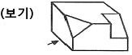
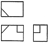
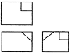
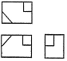
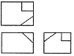
(정답률: 68%)
52. 보기와 같은 도면이 나타내는 단면은 어느 단면도에 해당 하는가?
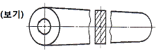
- 한쪽 단면도
- 회전도시 단면도
- 예각 단면도
- 온단면도(전단면도)
(정답률: 70%)
53. 다음 중 호의 길이 42㎜를 나타낸 것은?
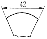
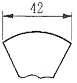
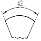
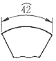
(정답률: 61%)
54. 보기와 같이 입체도의 화살표 방향이 정면일 때, 우측면도로 가장 적합한 것은?
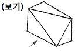
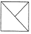
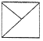
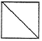
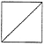
(정답률: 74%)
55. 그림과 같이 외경은 550mm, 두께가 6mm, 높이는 900mm 인 원통을 만들려고 할 때, 소요되는 철판의 크기로 다음 중 가장 적합한 것은? (단, 양쪽 마구리는 없는 상태이며 이음매 부위는 고려하지 않음)
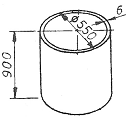
- 900×1709
- 900×1749
- 900×1765
- 900×1800
(정답률: 33%)
56. 보기 용접기호 중 가 나타내는 의미 설명으로 올바른 것은?
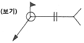
- 전둘레 필릿 용접
- 현장 필릿 용접
- 전둘레 현장 용접
- 현장 점 용접
(정답률: 66%)
57. 다음 중 물체의 일부분의 생략 또는 단면의 경계를 나타내는 선으로 불규칙한 파형의 가는 실선인 것은?
- 파단선
- 지시선
- 가상선
- 절단선
(정답률: 67%)
58. 보기 입체도에서 화살표가 지시한 면이 정면일 경우 정면도로 가장 적합한 것은?
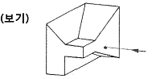
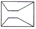
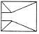
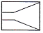
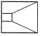
(정답률: 72%)
59. 제도 용지의 크기는 한국산업규격에 따라 사용하고 있다. 일반적으로 큰 도면을 접을 경우 다음 중 어느 크기로 접어야 하는가?
- A2
- A3
- A4
- A5
(정답률: 70%)
60. 배관설비 도면에서 보기와 같은 관 이음의 도시기호가 의미하는 것은?
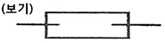
- 신축관 이음
- 하프 커플링
- 슬루스 밸브
- 플랙시블 커플링
(정답률: 62%)